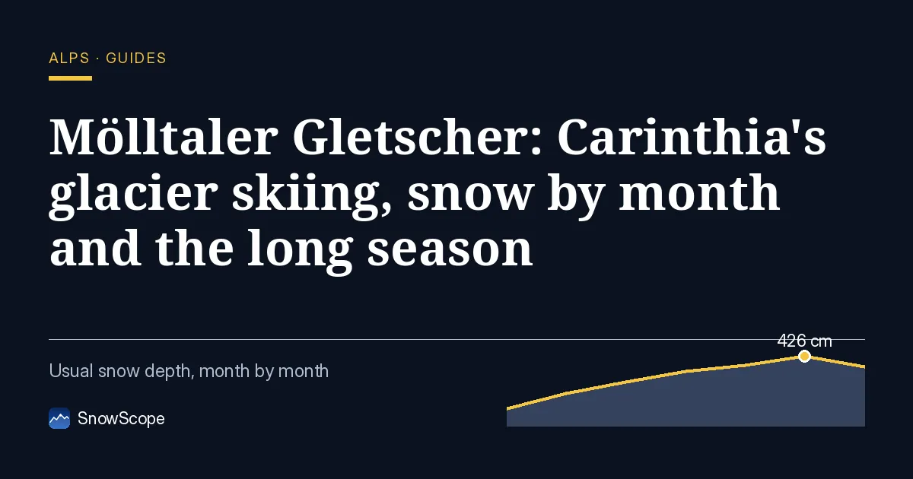
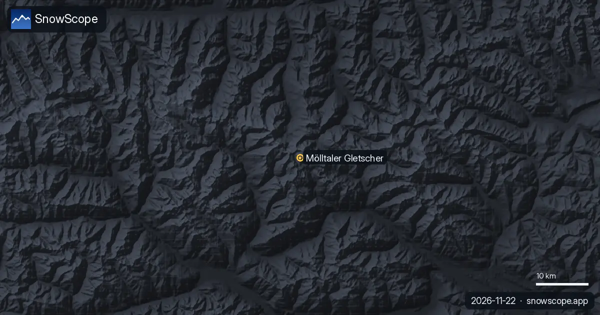

Mölltaler Gletscher: Carinthia's glacier skiing, snow by month and the long season
The Mölltaler Gletscher is Carinthia's only glacier ski area, a high bowl between 2103 m and 3084 m reached by an underground funicular from the Mölltal. Its 21 km of mapped runs on 9 lifts are modest; the snow is not. Our 46-winter history puts the usual winter peak at the top at 513 cm, more than five metres.
See the live snow forecast for Mölltaler Gletscher in the SnowScope appSnow depth, powder alerts and the 3D map, free.

Snow from September to June
At mid-mountain (2593 m) the first snow of the season lies by September 12 in half of the past winters, and it stays: the last snow at that height leaves by June 19. Snow is on the ground at mid-mountain for 256 days in a usual winter; at the top for 262 days, almost the whole year.
Autumn and early winter
November already brings 57 cm at mid-mountain and 104 cm at the top in a usual year, which is why the glacier is one of Austria's early-season training grounds. December reaches 118 cm and 198 cm. Even the lower end of the spread is comfortable: nine of ten Decembers had at least 103 cm at the top.
The deep months
The depth keeps building to spring. January shows 163 cm at mid-mountain, March 245 cm, and the top reaches 368 cm in March and 426 cm in April, the deepest month at that height. The most reliable week at mid-mountain is ISO week 13, at the end of March, with a usual 266 cm.
Mid-mountain holds at least 50 cm for 23 weeks in nine of ten winters, 31 weeks in half of them. For a glacier that is the whole point: there is no bad week between December and April.
Spring skiing into May
May still has 359 cm at the top in a usual year and 174 cm at mid-mountain. The runs soften by midday; the morning hours on the upper glacier are the ones to plan around.
A glacier that is changing slowly
Comparing the first 15 winters of our record with the last 15, the usual peak at the top went from 534 cm to 504 cm. The snow still comes; the ice under it is the part that is shrinking, as on every Alpine glacier. Last winter peaked at 350 cm at the top.
Tips for skiers
- For guaranteed snow in November and December, this is one of the safest choices in the eastern Alps.
- Dress for the top: the ski area starts above the tree line and the wind is part of the experience.
- Our numbers are a model of past winters for the area; the opening of runs and lifts is on the resort's site.
- Combine with the Ankogel ski area down the valley when the weather closes the glacier.
References and credits
- Wikipedia, 'Mölltaler Gletscher', retrieved 22 November 2026: Carinthia's glacier ski area above Flattach, access by the Gletscherexpress funicular. de.wikipedia.org/wiki/M%C3%B6lltaler_Gletscher
About these numbers
Snow numbers: SnowScope snow history, 46 past winters (1980-81 to 2025-26) at three heights of the resort, a model of the past corrected for height (an estimate for an area, not resort reports). Lift, run and access facts: the sources listed below, checked on the date shown.
Official avalanche bulletins: Lawinenwarndienst Kärnten
Cite this report
For research, teaching or the press: the numbers and charts are free to reuse under CC BY 4.0 with this citation.
SnowScope (2026), Mölltaler Gletscher: Carinthia's glacier skiing, snow by month and the long season, https://snowscope.app/blog/en/2026/11/moelltaler-gletscher-snow-by-month-austria-highest-glacier-skiing.html, accessed 2026-11-22
SnowScope (Atlas Labs). (2026, November 22). Mölltaler Gletscher: Carinthia's glacier skiing, snow by month and the long season. SnowScope snow reports. https://snowscope.app/blog/en/2026/11/moelltaler-gletscher-snow-by-month-austria-highest-glacier-skiing.html
BibTeX
@misc{snowscope2026moelltalergletschersnowb,
author = {{SnowScope (Atlas Labs)}},
title = {Mölltaler Gletscher: Carinthia's glacier skiing, snow by month and the long season},
year = {2026},
month = nov,
howpublished = {\url{https://snowscope.app/blog/en/2026/11/moelltaler-gletscher-snow-by-month-austria-highest-glacier-skiing.html}},
note = {Published 2026-11-22 11:14 UTC; accessed 2026-11-22}
}· CC BY 4.0 · Methods, data and tools →
Mölltaler Gletscher: snow and temperature by height, this winter vs last (tools) →
Follow Mölltaler Gletscher
Free: a message when fresh snow is coming, and the forecast every morning.
More snow reports

Early-season snow in the Alps is running 38% above the 46-year average. La Plagne's mid-slopes hold 36 cm more than usual for this date, with heavy snow forecast through Sunday.

Alpine day passes from 36 EUR: nine resorts compared by price, kilometres of runs and the snow they usually hold, to find the best day of skiing for your money.

New snow forecast for the Alps through early December. Saint François Longchamp leads with 228 cm expected over 14 days, starting with 35 cm on Thursday.